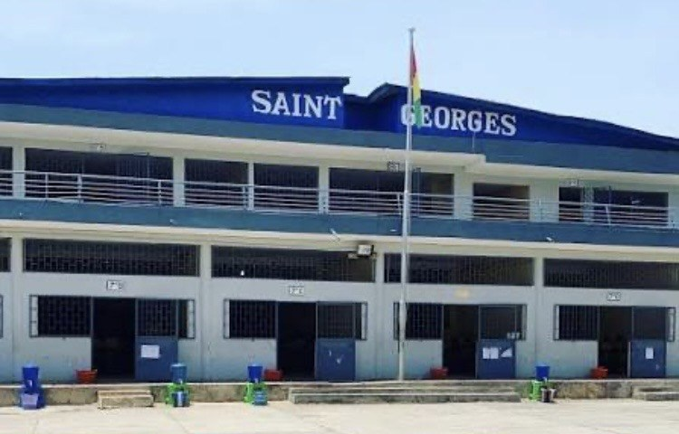
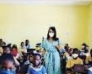
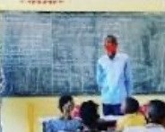
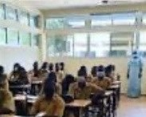
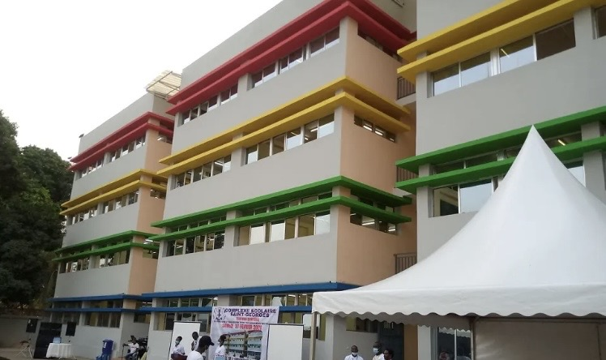

Travail
L'effort régulier est la clé de la réussite ; nous l'encourageons et le valorisons.
Sainte-Marie Saint-Georges réunit tous les cycles, de la maternelle au lycée, autour d'un même projet : la réussite et l'épanouissement de chaque élève.
Notre complexe scolaire propose un parcours continu : les élèves peuvent y effectuer toute leur scolarité, avec des équipes qui les connaissent et suivent leur progression année après année.
Nous appliquons les programmes officiels guinéens et préparons nos élèves aux examens nationaux, tout en cultivant le goût de l'effort, le respect et l'ouverture d'esprit.




Quatre engagements partagés par toute la communauté éducative : élèves, parents, enseignants et personnel.
L'effort régulier est la clé de la réussite ; nous l'encourageons et le valorisons.
Un cadre clair et un règlement respecté pour apprendre dans la sérénité.
Entraide entre élèves et dialogue permanent avec les familles.
Respect de soi, des autres et de l'environnement scolaire.

Bulletins réguliers, cahier de liaison et rencontres parents – enseignants tout au long de l'année.
Sport, journées culturelles, concours et sorties pédagogiques pour s'ouvrir et s'épanouir.
Séances de renforcement et préparation intensive avant les examens nationaux.
Les inscriptions pour l'année scolaire 2026-2027 sont ouvertes. Le secrétariat vous accueille pour toute information.